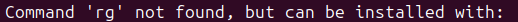

Amavis märkis reklaamkirja puhtaks
Thunderbirdi Inboxi jõudis Fuugu reklaam teemaga „Puhtus vaid 20 minutiga.”. Oodatud rämpsposti eraldamist ei toimunud. 19. novembri uurimisel võrreldi kirja toorpäiseid ja serveri vastuvõtulogi.
Kirja enda Date-päis viitas 18. novembrile, kuid Received-read näitasid tegelikku vastuvõttu 19. novembril kell 08.25. Päeva määramisel on siin aluseks vastuvõtt ja selle päeva uurimine.
Kontrollitud diagnoosikäik:
- Kirja täielikus ülemises päiseplokis oli
X-Virus-Scannedviide Amavisele, kuid puudusidX-Spam-StatusjaX-Spam-Flag. Täpne päisevaate avamise menüütee pole allikas talletatud. - Serveris otsiti sama vastuvõtuaja logi. Esimene toru kasutas
rgkäsku ja lõppes teategaCommand 'rg' not found. - Otsing korrati käsuga
grep -E. Allikas kasutatud ajavahemik oli:
sudo journalctl --since '2026-11-19 08:24:30' \
--until '2026-11-19 08:26:00' --no-pager | \
grep -E 'AMAVIS_MAIL_ID|POSTFIX_QUEUE_ID'AMAVIS_MAIL_ID ja POSTFIX_QUEUE_ID on siin privaatsuse tõttu asendusnimed. Kordamisel tuleb need asendada uuritava kirja päistest leitud tegelike tunnustega; algses katses olid kasutusel selle konkreetse kirja tunnused. Ilma viimase toru ja filtrita saab vaadata kogu nimetatud ajavahemikku.

Tegelik tulemus: kordusotsing tõi välja kell 08.25.15 rea Passed CLEAN {RelayedInbound} ja skoori Hits: 1.867. Postfixi LMTP vastus kinnitas salvestamist (Saved). Kasutaja esitatud terminalipilt kinnitab selle diagnostilise katse tulemust; eraldi kinnitust rämpspostifiltri parandamise kohta ei ole.
Ajutine töövõte toimis: puuduva rg asemel võimaldas grep -E vajaliku logirea leida. See ei muuda kirjade filtreerimist.
Püsiv parandus: kinnitamata. Kiri klassifitseeriti puhtaks, kuid kasutatud lävendid, reeglid ja võimaliku Sieve suunamise seis ei ole nende allikate põhjal kindlaks tehtud. Päiste puudumine üksi ei tõenda, et rämpspostihindamine jäi käivitamata. Ühtegi seadistusmuudatust ega edukat uut rämpspostikatset päeva lõpuks kinnitatud ei ole.